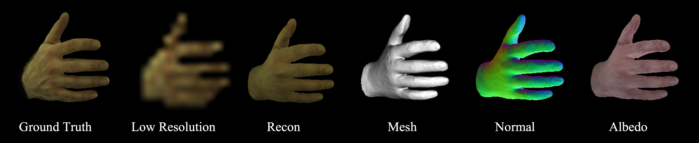
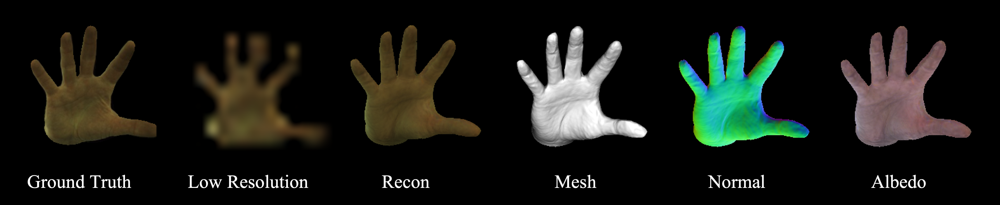
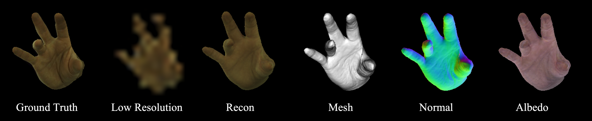
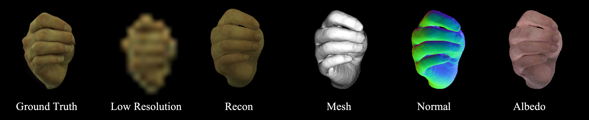
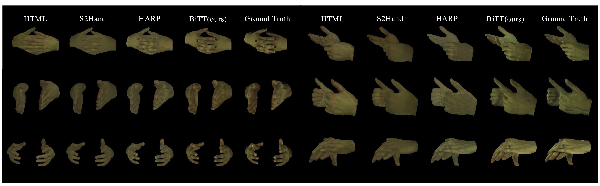
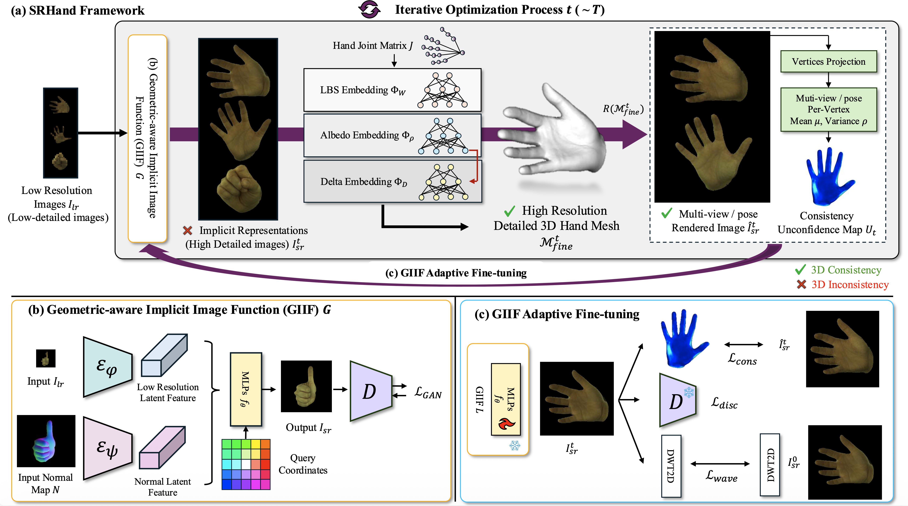

Reconstructing detailed hand avatars plays a crucial role in various applications. While prior works have focused on capturing high-fidelity hand geometry, they heavily rely on high-resolution multi-view image inputs and struggle to generalize on low-resolution images. Multi-view image super-resolution methods have been proposed to enforce 3D view consistency. These methods, however, are limited to static objects/scenes with fixed resolutions and are not applicable to articulated deformable hands. In this paper, we propose SRHand (Super-Resolution Hand), the method for reconstructing detailed 3D geometry as well as textured images of hands from low-resolution images. SRHand leverages the advantages of implicit image representation with explicit hand meshes. Specifically, we introduce a geometric-aware implicit image function (GIIF) that learns detailed hand prior by upsampling the coarse input images. By jointly optimizing the implicit image function and explicit 3D hand shapes, our method preserves multi-view and pose consistency among upsampled hand images, and achieves fine-detailed 3D reconstruction (wrinkles, nails). In experiments using the InterHand2.6M and Goliath datasets, our method significantly outperforms state-of-the-art image upsampling methods adapted to hand datasets, and 3D hand reconstruction methods, quantitatively and qualitatively. The code will be publicly available.
Given low-resolution hand images, our method firstly reconstructs high-resolution hand images using GIIF. Then, using these images, we reconstruct detailed 3D shapes while jointly optimizing the GIIF through adaptive fine-tuning from 3D shapes.




Our proposed GIIF is a geometric-aware implicit image function that learns detailed hand prior by upsampling the coarse input images. Given any resolution of input images, our GIIF can reconstruct high-resolution images with fine details.

(a) Given LR images, we reconstruct high-resolution images using GIIF. Using these images, we reconstruct detailed 3D shapes while jointly optimizing the GIIF through adaptive fine-tuning from 3D shapes. (b) shows the architecture of GIIF. (c) represents the adaptive fine-tuning process.

@InProceedings{kim2025srhand,
author = {Kim, Minje and Kim, Tae-Kyun},
title = {SRHand: Super-Resolving Hand Images and 3D Shapes via View/Pose-aware Nueral Image Representations and Explicit 3D Meshes},
booktitle = {Advances in Neural Information Processing Systems (NIPS)},
year = {2025}
}
This work was in part supported by